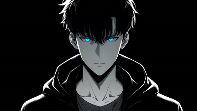
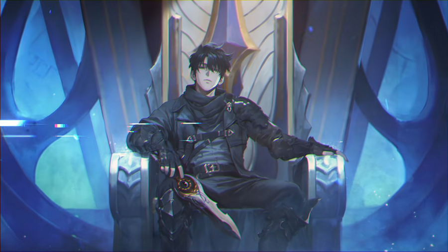

Em 2025, Solo Leveling ultrapassou todas as expectativas. A segunda temporada não apenas manteve o hype — ela redefiniu o padrão para animes de ação e fantasia, com batalhas épicas, revelações surpreendentes e um Sung Jin-Woo cada vez mais imbatível.
"Se eu parar aqui... vou me odiar pelo resto da vida." – Sung Jin-Woo
Da Fraqueza ao Domínio das Sombras
De caçador de rank E — o mais fraco entre os fracos — a líder supremo de um exército de sombras. Sung Jin-Woo provou que cada derrota é apenas um passo a mais rumo à vitória. Sua evolução é um espetáculo narrativo e visual que prende o público do início ao fim.
Por Que Solo Leveling É Imperdível
🔥 Três Razões Para Assistir Agora:
- A Transformação de Jin-Woo: Uma jornada de superação que vai de invisível a invencível.
- Ação e Estratégia: Combates inteligentes, tensão constante e um sistema de RPG vivo e dinâmico.
- Qualidade Cinematográfica: Animação impecável, com cada quadro digno de um pôster.
A Segunda Temporada e o Futuro
O início de 2025 trouxe a 2ª temporada quebrando recordes. As batalhas ficaram mais intensas, os inimigos mais letais, e Jin-Woo cada vez mais distante de sua humanidade. Há rumores de que Solo Leveling: Arise, o jogo oficial, terá ligação direta com os próximos episódios — e fãs especulam um final de temporada tão impactante que até leitores do manhwa vão se surpreender.
Curiosidade Nerd
Chugong, criador da obra, escreveu Solo Leveling como uma crítica à meritocracia extrema na Coreia do Sul. Além disso, o jogo de cartas do anime já se tornou um fenômeno de vendas no Japão.


Por Que Este É Só o Começo
Não se trata apenas de lutas insanas — mas de ver personagens alcançando seus limites e os superando. Sung Jin-Woo está em ascensão, e cada passo o aproxima de se tornar uma verdadeira divindade no mundo das sombras.
Artigos Relacionados